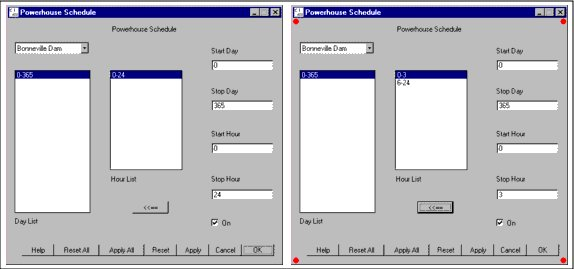
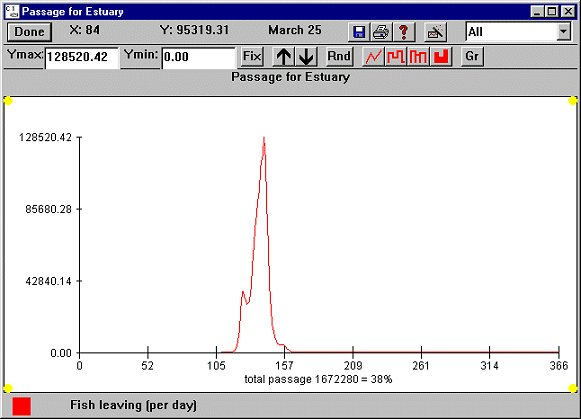

Throughout the model, COMPASS uses the concept of two level editing and display. The data being displayed on the screen may be different from the data in the underlying database. A red dot in each corner of a window indicates that the data being displayed is different from the data currently stored in the model and that changes have not been applied to the underlying database, yet. For changes to take effect, click Apply or Apply All. Modifications that have not been applied can be discarded by clicking Reset or Reset All.
Note. For example, if you open windows for all three dams for Flows / Reservoirs and modify the Outflow at each dam, you can apply the changes in two ways. If you click Apply in the Chief Joseph Dam Outflow window, that will only save the changes made to Chief Joseph Dam Outflow. If you click Apply All in any of the three dam Outflow windows, that will save changes made to Outflow at all three dams.
All input windows in COMPASS contain all or a combination of the Standard Commands.

Powerhouse Schedule window (default) and before applying changes
In general, any number of windows of the same type can be active at the same time - just select the same menu item several times to create several copies of the same type of window. For input windows (dialogs and editable graphs), it is possible to have multiple windows displaying the same data at the same time. If the data is changed in one window, the others will update automatically to reflect the changes.
Yellow dots will be displayed in the corners of all output graph windows when any input data has been changed, but the model has not been re-run to create new outputs. Yellow dots do not imply correlation between the data displayed in the output window and the changes to model input.
To demonstrate this, run the program in Scenario Mode, and the open a Passage graph for the Estuary and the VVar window. After you click Apply in the VVar window, the passage graph will display yellow dots. VVar has changed, but passage has not been recalculated. Now run the model again. Passage is now up to date with respect to model inputs, so the yellow dots disappear. Please take note that yellow dots would also appear on a TDG Saturation output graph, even though VVar does not influence total dissolved gas.

Yellow Dots in Passage for Estuary window